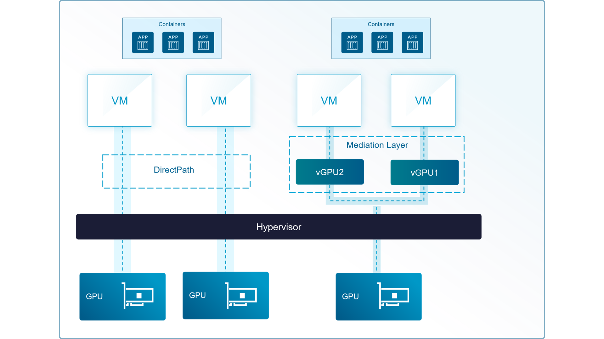
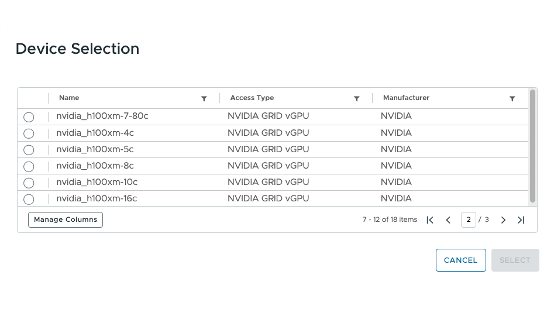

GPU를 나누어 여러 워크로드에 배분합니다
물리 GPU를 분할해 여러 가상 머신에 할당하거나 한 워크로드에 여러 장을 묶어 제공합니다. 사용률과 메모리 점유는 VCF Operations에서 함께 확인합니다.


소프트웍스가 하는 일
개발 · 검증부터 모델 추론, 대규모 학습까지 — 단일 정책을 일률 적용할 때 발생하는 자원 낭비와 병목을 해결합니다. 소프트웍스는 서비스 용도별 특징을 정밀하게 분석하여, 개발 환경은 세밀한 분할로 효율성을 끌어올리고 추론 및 학습 환경은 성능을 극대화하는 최적의 GPU 가상화 · 분할 단위를 맞춤 구성합니다.